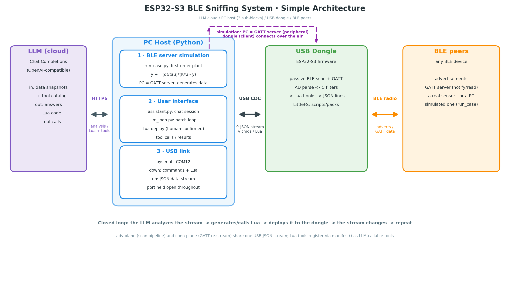
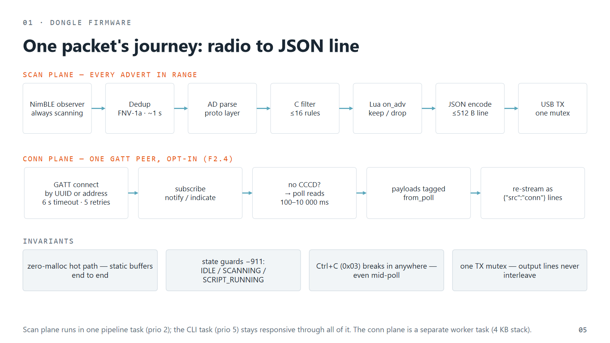
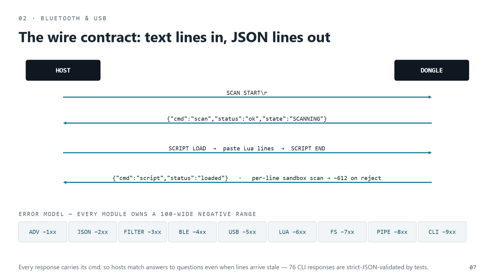
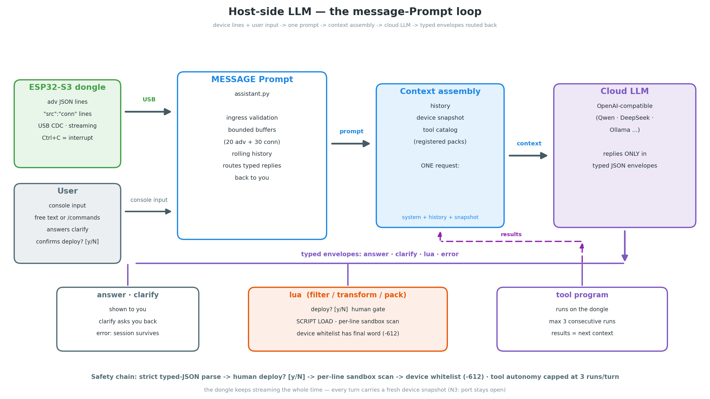
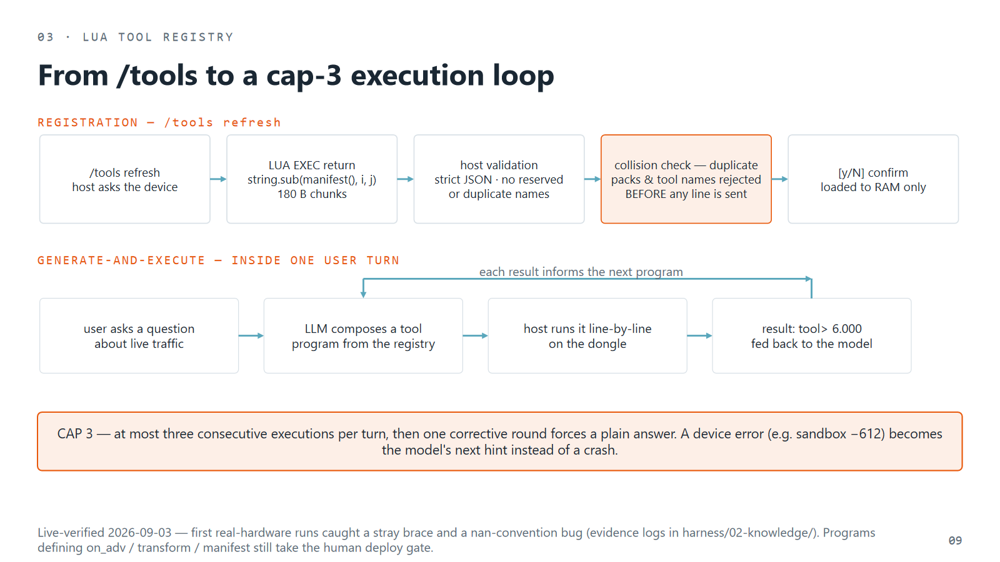
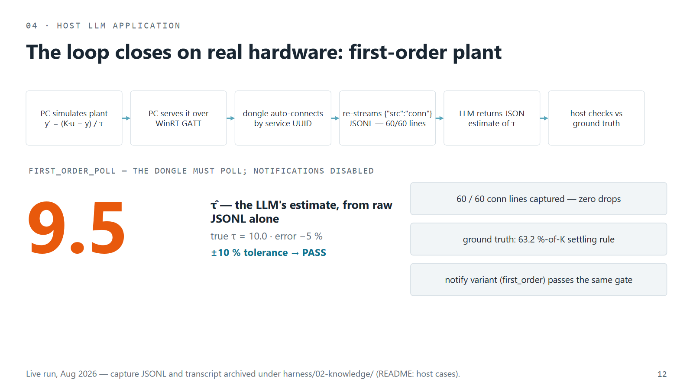
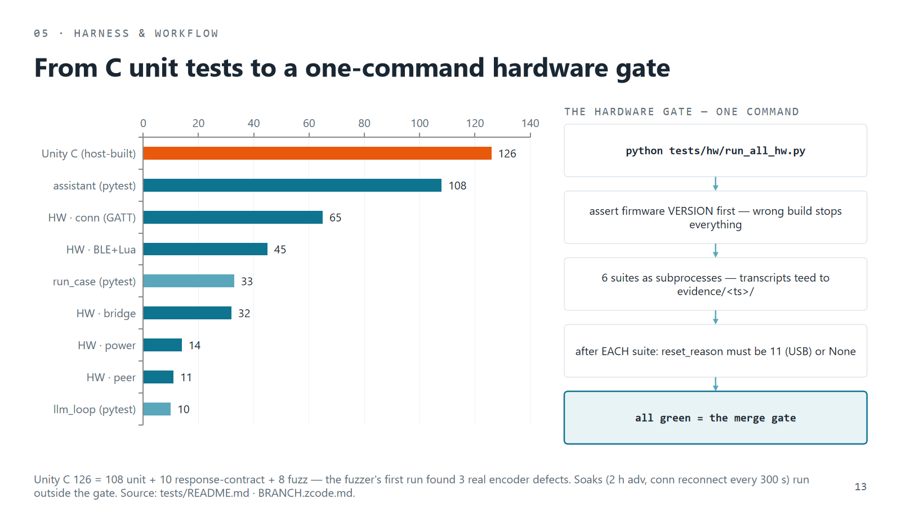

The Dongle That Writes Its Own Tools: An ESP32-S3 BLE Lab Operated by an LLM
A five-dollar ESP32-S3 dongle bridges BLE devices and a cloud LLM through your PC. The dongle collects advertisement and GATT-connection data and streams strict JSON lines over USB; the host post-processes that stream, enriching it with semantics, and an LLM reads it, answers your questions, writes Lua code, defines its own tools, and deploys them back to the dongle — closing the loop all the way to the device the data came from. Everything is sandboxed, confirm-gated, and verified live on real hardware. This article explains the system, the data flow, and — from a user's point of view — what you can actually do with it.
Debugging Bluetooth Low Energy devices is oddly manual. You either buy a dedicated capture gadget, fight Wireshark captures, or write a throwaway parser script for every new device you meet. And when you want the firmware itself to filter or interpret traffic differently, you are back on the bench: rebuild, reflash, retest.
This project takes a different bet: put a Lua sandbox on a cheap radio, and put an LLM on the host side where it can extend its own instrumentation. The dongle collects; the PC gives the data meaning; the model reads that meaning and writes the code that steers what happens next — and the code ships over USB in seconds instead of a reflash cycle. The whole loop — capture, analyze, generate, deploy, observe — runs against real hardware today, and every claim in this article is backed by a check in a 300+ test harness.
TL;DR: ESP32-S3 firmware (C, ~5.7k lines + vendored Lua 5.4) turns BLE adverts into ≤512-byte JSON lines over USB CDC. Three self-contained Python tools put an OpenAI-compatible LLM in the loop: you chat with it about live traffic, it writes and deploys Lua filters behind your confirmation, it can define and run its own Lua tools on the dongle, and a physics demo proves the loop — the LLM estimates a simulated sensor's time constant to within 5% of ground truth.

One session, three participants
It helps to name who is actually in the room when a session runs. On your side there are three participants — plus one device at the other end of the radio link:
- The device — your sensor or controller — is where the data is born. It advertises over the air, or holds a GATT connection the dongle can join.
- The USB dongle collects that data in both ways — advertisements, or a live BLE connection — and streams it as strict JSON lines over USB.
- The PC host post-processes the stream: it improves the semantics — deduplicates repeats, names devices, tags which data plane a line came from, keeps a bounded rolling snapshot — so raw radio bytes become meaningful, model-ready context. The LLM lives here, one API call away.
And you are the fourth participant: the human who asks the questions and approves the code. The session then runs as one loop. The device's data flows up — dongle, then PC, then post-processed into the LLM's context. The LLM replies with more than words: Lua scripts, tool programs, plain answers, follow-up questions. The code travels back down the same chain and runs on the dongle, meters from the device — filtering its data, transforming it, reacting to it live, driving the dongle's own pins, holding or dropping the connection. That is the real product: the LLM controls the device through the dongle, with you watching over its shoulder and holding the deploy key.
What it looks like from your side
Before the internals: as a user you touch this system at exactly three places, and everything else exists to make those three good.
1. You type to the dongle console (any serial terminal — PuTTY, screen, the bundled monitor). Input: plain text commands like SCAN START or FILTER ADD RSSI -70. Output: one strict-JSON line per command, plus a live stream of JSON events for every BLE advertisement — readable by you, by scripts, and by the LLM.
2. You run the host tools (plain Python command lines). Input: a port name, a goal in English, case flags. Output: capture files, generated Lua scripts, graded estimates, session transcripts.
3. You talk to the LLM. This is the main interface, and the reason the project exists. You type an ordinary question — "which devices around me are Apple?", "keep only my two sensors", "what's the average RSSI of the plant sensor?" — and the model answers, asks you follow-up questions when you were ambiguous, proposes Lua code, or executes tool calls on the dongle. You approve every code deploy; tool calls within a bounded budget run autonomously.
So the contract with you is simple: text in, JSON and answers out. Everything below explains what makes that trustworthy.
The dongle: one packet's journey
The firmware is an ESP-IDF v5.1 project with one component per concern, communicating only through public headers in interfaces/*_if.h — that contract layer is why parallel AI agents could extend this codebase for months without stepping on each other.
usb— USB-Serial/JTAG console: line I/O, Ctrl+C interrupt pathble— NimBLE observer (passive scan, dedup) + optional GATT centralproto/json_enc— AD-structure parsing and the JSON line encoderfilter— up to 16 C filter rules evaluated on the hot pathlua— Lua 5.4 sandbox on a 128 KB static pool; hooks, tool packs,hw.*bindingscli— command dispatch behind IDLE / SCANNING / SCRIPT_RUNNING state guardsbridge/storage/power— script/pack upload scanning, LittleFS, light-sleep power management

Every advertisement takes the same journey: NimBLE observer (passive, continuous) → dedup (FNV-1a, ~1 s window) → AD parse → C filter engine → [Lua on_adv hook: keep/drop] → JSON encode → [Lua transform hook] → USB console TX. A second, optional plane connects the dongle to one GATT peer — subscribe to its notifications, or fall back to polling reads — and re-streams that data as "src":"conn" lines on the same USB stream.
The invariants are the unglamorous part that makes the rest possible: a zero-malloc hot path, one TX mutex so lines never interleave, per-module numeric error codes, and a state machine that rejects mistimed commands with -911. Ctrl+C (0x03) is polled even inside the connection worker — no command can lock the console.
A wire contract an LLM can trust

The host link is USB CDC, and the protocol is almost embarrassingly simple:
> SCAN START\r
< {"cmd":"scan","status":"ok","state":"SCANNING"}
> SCRIPT LOAD
> print("hello from the model")
> SCRIPT END
< {"cmd":"script","status":"loaded"}Three details matter more than they look.
Every response carries a cmd field — when an agent interrupts a running script and fires the next command, stale response lines may still drain; the cmd field means an old answer can never be mistaken for a new one. Errors are numbers, not prose — each module owns a 100-wide negative range (Lua sandbox -6xx, CLI -9xx…), so a program — or a model — can branch on failure precisely. And uploaded code is scanned per line, fail-closed: os., io., require and friends are rejected with -612 before they ever reach the interpreter. The device, not the host, has the final word on what runs.
The host-side LLM: the actual product
Here is the part to emphasize, because it is the reason for everything above: the LLM is not a gimmick bolted onto the side — it is the primary interface. The three Python host tools exist to give the model clean context and safe actuators.

What the model sees. A rolling snapshot of both data planes — the latest deduplicated advertisement lines and the latest connection-plane samples — refreshed every conversational turn, plus the tool registry (below) and your conversation. The sample is capped (20 adv + 30 conn lines) to bound token cost.
What you can ask it. Anything about the live traffic: "what devices are around me?", "is my sensor's signal getting weaker?", "summarize the manufacturers I can see". It answers in a typed envelope:
answer— a plain answer, grounded in the snapshot;clarify— you were ambiguous ("keep only my devices" — which ones?), so it asks before acting;lua— it proposes code: a filter, a transform, or a tool pack, deployed only afterdeploy? [y/N];error— something failed (provider, device); the session survives and the failure is shown to you and fed back to the model as a hint.
What the model can do on its own. With a tool registry loaded, it can go beyond answering: given a question about live data, it may write a small Lua tool program composing registered tools and execute it on the dongle, read the result, and continue — up to three consecutive executions per turn, then it must answer in plain text. This "generate-and-execute" loop is what turns the dongle into a self-extending instrument.
How you stay in control. Four gates, in order: strict typed-envelope parsing (one escape-focused retry); the human deploy? [y/N] gate for every script/hook deploy — and an optional --mutating-gate that extends confirmation to tool programs that mutate hardware state; the per-line sandbox scan on upload; and the on-device whitelist sandbox as the final authority. Bounded autonomy for tool calls; explicit consent for everything that changes what the pipeline does.

Defining tools: the Lua tool registry. A tool pack is a plain Lua file where every line is one complete statement ≤240 bytes (so it rides the existing single-line transport with zero firmware changes), every tool takes one table argument and returns a string, and a manifest() function advertises the API — name, doc, typed args, example, and a mutating flag:
-- every tool: ONE table argument, returns a string
function mean(a)
local s = 0
for _, v in ipairs(a.numbers) do s = s + v end
return string.format("%.3f", s / #a.numbers)
end
function manifest()
return '{"version":1,"name":"demo","tools":'
.. '[{"name":"mean","doc":"mean of numbers",'
.. '"args":[{"name":"numbers","type":"table"}]}]}'
endLoad it from the assistant with /tools load demo.lua — done, the tool is callable by you and by the model. Packs can be persisted to flash and marked autorun, so your tools are alive on every boot with no PC attached. Device-side hw.* bindings (GPIO write/read, 12-bit ADC, a small persistent key-value store) let packs touch the physical world; the kv store even survives reboots.
The interfaces you can call
The complete user-facing surface, condensed. On the console (input → what you get back):
- You send
SCAN START/STOP,SCAN INTERVAL ms— you get JSON advertisement lines streaming, plus scan state - You send
FILTER ADD NAME/UUID/RSSI/MAC …— only matching devices stream (≤16 rules, AND/OR logic) - You send
SCRIPT LOAD → lines → SCRIPT END, thenSCRIPT RUN/STOP—on_adv/transformhooks join the pipeline - You send
LUA EXEC codeorLUA BEGIN … LUA END— one-liner or 4 KB chunk results, immediately - You send
PACK BEGIN name [autorun] → lines → PACK END— a tool pack stored in flash, optional boot autorun - You send
CONN TARGET/START/STOP/INTERVAL …— one GATT peer's data arrives as"src":"conn"lines - You send
POWER SLEEP ON/OFF,STATUS,VERSION— orCtrl+C— power policy; a full health blob; a universal interrupt
In the assistant session (the LLM chat):
- Free text — any question about live traffic → an
answer/clarify/luaenvelope from the model yat adeploy? [y/N]prompt → the proposed Lua is uploaded and run (sandbox-scanned)/tools load file.lua·/tools persist name autorun→ register a tool pack · persist it to flash/scan on|off·/conn on|off|status·/samples·/history→ drive both data planes without leaving the chat
From the shell (batch and scripted use):
python llm_loop.py COM12 loop --secs 8 --goal "keep only my Sensor_* devices"
python host_app/assistant.py COM12 # the interactive chat
python host_app/run_case.py COM12 --case first_order --estimate
python host_app/assistant.py COM12 --no-llm # mechanics without any API keyAny OpenAI-compatible endpoint works — OpenAI, Qwen/DashScope, DeepSeek, OpenRouter, local Ollama. Credentials live in a gitignored .llm_env (template: .llm_env.example); a rejected key or an Aliyun-dialect URL self-heals with an announced retry.
The demo that makes it concrete: estimating a time constant
The clearest answer to "what can this system actually do?" is the first-order plant case. One command:
python host_app/run_case.py COM12 --case first_order --tau 10 --step-at 5 --secs 60 --estimateWhat happens, step by step:
- Your PC becomes a BLE sensor. A GATT server (Windows WinRT) advertises a service and serves measurements of a simulated first-order plant:
y' = (K·u − y)/τ, with the inputustepping from 0 to 1 at t = 5 s. (In GATT, the server is the side that holds — here, generates — the data; the dongle connects to it as the client.) This host-side BLE simulation is a feature in its own right — reproducible radio traffic with known ground truth, no second device needed. - The dongle auto-connects by the advertised service UUID and starts receiving the measurements, which it re-streams to the host as
"src":"conn"JSON lines into a capture file. - The LLM gets the raw capture — just the JSONL samples, nothing else — and must answer in JSON: what is the time constant τ of this sensor?
- The harness grades the answer against physics, not opinions: at t =
step_at + τa first-order step response must reach 63.2% of K, and the estimate must land within ±30% of the configured truth.
The recorded live run: 60/60 lines captured, and the LLM's estimate was τ̂ = 9.5 against the configured τ = 10.0 — a −5% error, derived by the model from raw samples alone. A harder variant, --case first_order_poll, makes the characteristic read-only so subscribing is impossible; the dongle detects this and falls back to polling reads — and the case still passes end to end.

Why this demo matters: it exercises simulation (host), radio (connect/subscribe/poll), transport (JSON lines), and intelligence (the estimate) in one measurable loop. When you change anything in the stack, this is the experiment that tells you whether the product still works.
Trust is a test suite

- 160 Unity C tests host-built (unit + response contract + fuzz) — every documented CLI response is strict-JSON validated; the fuzzer's first run found three real encoder defects.
- 198 python checks across the three host tools (153 on the assistant alone), including whole-REPL sessions over a device simulator.
- 167 hardware checks in suites driven over the real COM port, behind one command (
python tests/hw/run_all_hw.py) that asserts the firmware version first, tees every transcript, and checks the chip'sreset_reasonafter each suite — an unexpected reboot fails the gate. - Soaks: two-hour advertisement runs watching the Lua pool, and connection soaks reconnecting every 300 s.
The project is also a case study in AI-native development: a machine-facing project brief, numbered design decisions in proposals, a second model reviewing code before merges, and a branch ritual where merges are decided by the hardware gate — never by confidence.
Roadmap, and how to try it
- Next for the tool registry: more
hw.*bindings, richer mutating-tool workflows, native function-calling on models that support it. - Portability: the firmware is plain ESP-IDF — it already runs on other ESP32-S3 boards (voice/OLED dev boards included).
The repo builds with stock ESP-IDF v5.1, the C tests run host-side with gcc or MinGW, and the hardware suites need only the dongle on a COM port:
git clone https://github.com/jinboagent/esp32_lua_llm.git
cd esp32_lua_llm
scripts\build.bat && scripts\flash.bat :: firmware
cmake -S tests/host -B build/host -G Ninja && cmake --build build/host
build\host\test_runner.exe :: 160 C tests
python tests/hw/run_all_hw.py :: hardware gate
python host_app\assistant.py COM12 :: start chattingIf you have ever wanted an LLM that doesn't just talk about your devices but sits in the loop with them — data flowing up through a dongle, working code flowing back down — with guardrails worth trusting, this is a small, complete example of how to build one.
The repository: github.com/jinboagent/esp32_lua_llm — firmware, host tools, tests, user guides (docs/features.zcode.md, docs/user-guide.zcode.md, docs/demo-first-order.zcode.md), and a 17-slide architecture deck. Thanks for reading.